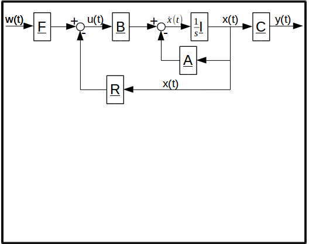
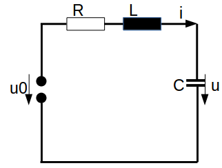

SIMACT
Simulative Adaptive Control Theory.
View on GitHub


(1) Simple SISO
2x2 System:
hier blockschaltbild des systems aufmalen.
d

States: i, u
Energy Storages: L, C
Values:
R=2Ohm C=1mF L=1mH
Differential Equations:
(2) Not controllable SISO
2x2 System:
hier blockschaltbild des systems aufmalen.
States: i, u
Energy Storages: L, C
Values:
R=2Ohm C=1mF L=1mH
Differential Equations:
(1) Analysis:
Transformations:
Transformation to Jordannormal Form:
Transformation to Steuerungsnormal Form:
Transformation to Beobachtungsnormal Form:
Stability:
Transfere Function:
Kalman:
Gilbert
Hautus
(1) Not observable SISO
2x2 System:
hier blockschaltbild des systems aufmalen.
States: i, u
Energy Storages: L, C
Values:
R=2Ohm C=1mF L=1mH